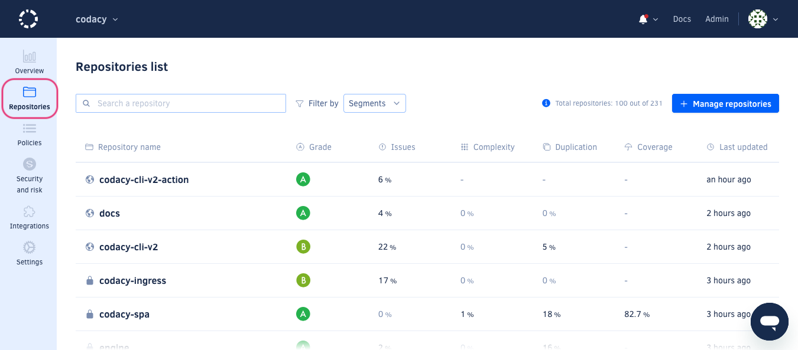
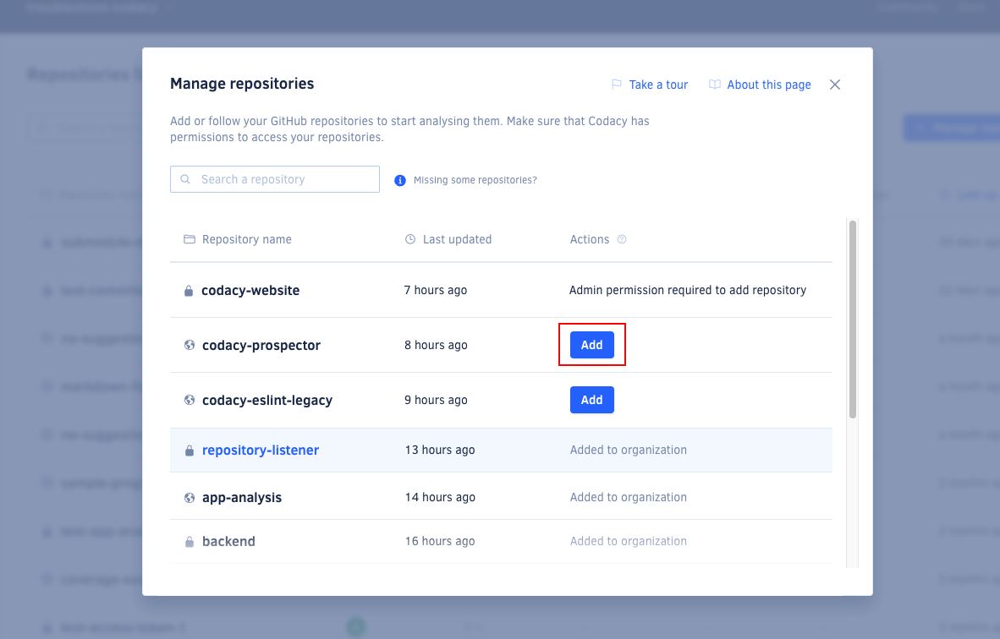
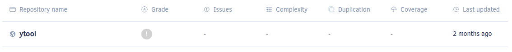
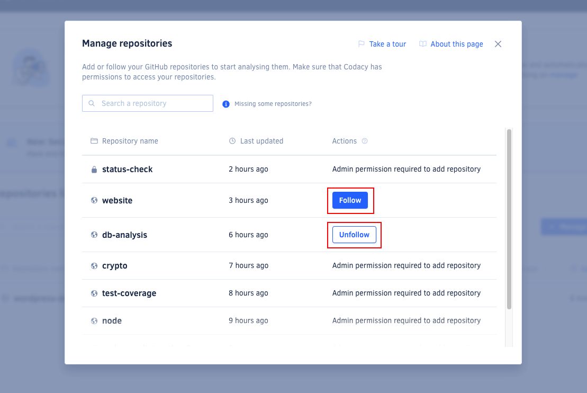
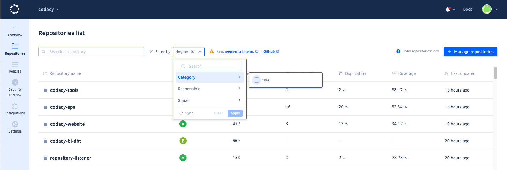
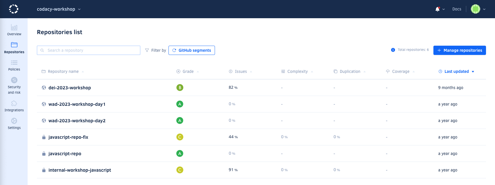

Managing repositories#
Users with the necessary permissions on your Git provider can add repositories to Codacy to start analyzing them. The remaining organization members with access to the added repositories can then follow on Codacy the repositories of their interest.
Important
To see your repositories on Codacy, make sure that you have the necessary permissions over the repositories on the Git provider and that Codacy has the necessary permissions to access the repositories.
To see all the repositories that you follow on Codacy, open the page Repositories under your organization. Organization admins also see the total number of repositories that have already been added to the organization.
Across the application, Codacy calculates and displays data for the repositories on this list.

This page lists the repositories that you follow on Codacy sorted by last updated date, and allows you to compare the repositories on the list according to the following metrics:
The list also displays error and warning messages for repositories that have issues, such as when there are no committers added to the organization or when Codacy stopped having access to the repository. Hover the mouse cursor over the warning icons or open the repository to see more details.
If you follow many repositories, you can use the search field above the list to quickly find a specific repository.
Adding a repository#
Analyzing private repositories is only available on paid plans
Users with the necessary permissions can add a repository to Codacy to start analyzing it.
Note
When a user adds a new repository to Codacy, all organization admins start following it automatically.
To add new repositories to Codacy:
-
Click the button Manage repositories at the top right-hand corner of the page. This opens a window listing your organization repositories.
-
Click Add next to the repositories you want to add. If you have many repositories, you can use the search field above the list to quickly find a specific repository.

-
When you're done, close the window to return to your repositories list.
Although Codacy immediately starts analyzing newly added repositories, they display empty metrics until the first analysis returns results.

Following or unfollowing a repository#
Users with no permission to add a repository to Codacy, can follow that repository after it has been added to Codacy, and stop following it at any time.
To follow or unfollow repositories on Codacy:
-
Click the button Manage repositories at the top right-hand corner of the page. This opens a window listing your organization repositories.
-
Click Follow or Unfollow next to the repositories you want to follow or unfollow. If you have many repositories, you can use the search field above the list to quickly find a specific repository.

-
When you're done, close the window to return to your repositories list.
Note
You automatically start following a repository as soon as you access any page from that repository. For example, when you access the repository using a direct link on your Git provider UI.
Conversely, you automatically stop following a repository as soon as you try accessing any page from that repository but you don't have permissions to see that repository anymore.
Transferring a repository to another organization#
On GitHub, when you transfer a repository to a different organization, GitHub only notifies the destination organization about the transfer — the original organization doesn't receive any notification. Because of this, Codacy needs some information from both organizations to keep track of the repository.
Codacy automatically removes the repository from its original organization when both of the following organizations are added to Codacy:
- The original organization that the repository is being transferred from. Since the repository is already tracked on Codacy under this organization, this is normally already the case.
- The destination organization that the repository is being transferred to. This is usually the step you need to take: adding the destination organization to Codacy is what installs the Codacy GitHub App there, allowing Codacy to receive the transfer notification.
Note
The destination organization doesn't need a paid plan or any repositories added to Codacy — simply adding the organization to Codacy so that the Codacy GitHub App is installed is enough for Codacy to detect the transfer.
This is commonly used to set up a dedicated "archive" organization on GitHub, to which repositories are transferred when they're decommissioned, so that Codacy automatically cleans them up from their original organization.
Codacy only removes the repository from its original organization — it doesn't automatically add it to the destination organization on Codacy. If you want to keep analyzing the repository after the transfer, you still need to add it to the destination organization on Codacy yourself.
Important
This is currently supported for GitHub Cloud and GitHub Enterprise Cloud only. For GitLab and Bitbucket, or if the destination organization isn't added to Codacy, remove the repository manually.
Repository archived on GitHub#
Since July 7, 2026, when you archive a repository on GitHub, Codacy automatically removes that repository from Codacy, as archived repositories are read-only and don't need further code quality analysis.
Note
This only applies to repositories archived on GitHub Cloud or GitHub Enterprise Cloud — GitLab and Bitbucket aren't affected.
Important
This only applies going forward: repositories that were already archived on GitHub before July 7, 2026 aren't automatically removed. Remove them manually if needed.
If you unarchive a repository after Codacy removes it, Codacy doesn't automatically bring it back — you need to add it back to Codacy to resume analyzing it.
Finding your repositories with Segments#
Codacy allows you to utilise Segments to categorize and filter repositories more effectively within the Codacy platform.
Check out how to enable and configure Segments


See also#
- How to setup Segments?
- Which metrics does Codacy calculate?
- How does Codacy support GitHub Enterprise?
Was this page helpful?
Your feedback helps us improve the documentation.
255 characters left
Thanks for helping improve Codacy documentation.
For more detailed feedback, open an issue on GitHub.